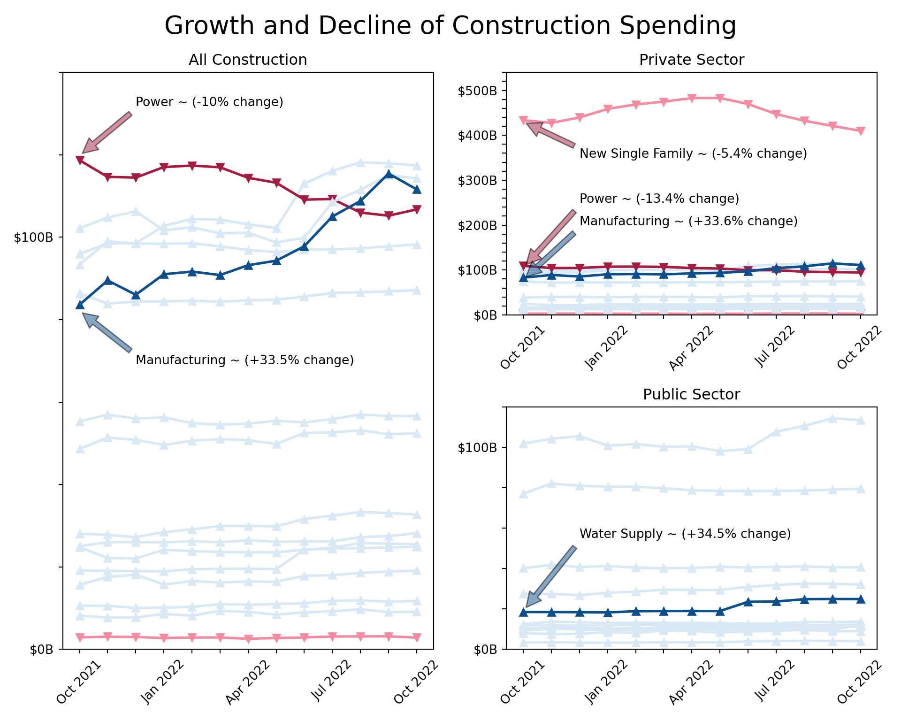

library(gt)
library(gtExtras)
library(tidyverse)
library(rio)
library(dplyr)
library(sparkline)
# import data - June 2022 - Oct 2022
url <- 'https://www.census.gov/construction/c30/xls/release.xlsx'
#url <- 'release.xlsx' #alternatively, please use the provided spreadsheets on GitHub in a static way
url1 <- rio::import(file = url,which = 1, skip = 4)
# clean up data
df1 <- url1 %>% drop_na()
# defining column names using vector
names(df1) = c("Type_of_Construction","Oct_2022","Sep_2022","Aug_2022","Jul_2022","Jun_2022","Oct_2021","Ref_Sep_2022", "Ref_Oct_2021")
df1 <- select(df1, Type_of_Construction, Jun_2022, Jul_2022, Aug_2022, Sep_2022, Oct_2022, Oct_2021, Ref_Sep_2022, Ref_Oct_2021)
###I recently came across the Posit 2022 Table Contest and decided to participate for the first time. I am relatively newer to {R} but not new to data visualization, so I thought it would be a great opportunity to expand upon my learning. To go along with the official requirements, the code repository for my entry is located on GitHub, and I have classified my entry as a hybrid “Other” submission type because I consider it a hybrid high-level narrative on chart/table design + mini tutorial on some key elements.
For my entry type, I will walk through the high-level considerations I had in creating tables in {R} and line plots in {Python}. My data topic of choice is Construction Spending in the U.S. as it is relevant to the industry I work in.
Data Source Considerations
The data sources for Construction Spending in the U.S. are ever changing as the survey is conducted with monthly reports. In addition to that, the Excel reports that are typically available include a span of only a few months at any given time.
For the Posit Table Contest, I merged three different data sets, so I could get an entire year’s worth of data. All data sets were brought into my code via URL links as opposed to static files.
Here is how I imported the data sets and prepped them for use with {R}. I grabbed seasonally adjusted data from the first tab of three data sources (most recent and two further back). I skipped the first four rows to go beyond any “header” information in the tables.
# Jan 2022 - May 2022 data
# import data from URL
url <- 'https://www.census.gov/construction/c30/xls/pr202205.xlsx'
#url <- 'pr202205.xlsx' #alternatively, please use the provided spreadsheets on GitHub in a static way
url2 <- rio::import(file = url,which = 1, skip = 4)
# clean up data
df2 <- url2 %>% drop_na()
# defining column names using vector
names(df2) = c("Type_of_Construction1","May_2022","Apr_2022","Mar_2022","Feb_2022","Jan_2022","May_2021","Ref_April_2022", "Ref_May_2021")
#selecting specific data (not June as it's already captured in df1)
df2 <- select(df2, Type_of_Construction1, Jan_2022, Feb_2022, Mar_2022, Apr_2022, May_2022)# Nov 2021 - Dec 2021 data
# import data from URL
url <- 'https://www.census.gov/construction/c30/xls/pr202201.xlsx'
#url <- 'pr202201.xlsx' #alternatively, please use the provided spreadsheets on GitHub in a static way
url3 <- rio::import(file = url,which = 1, skip = 4)
# clean up data
df3 <- url3 %>% drop_na()
# defining column names using vector
names(df3) = c("Type_of_Construction2","Jan_2022","Dec_2021","Nov_2021","Oct_2021","Sep_2021","Jan_2021","Ref_Dec_2021", "Ref_Jan_2021")
#selecting specific data (not Oct as it's already captured in df1)
df3 <- select(df3, Type_of_Construction2, Nov_2021, Dec_2021)
Important
The latest release gets updated approximately every month as new survey results come out from the U.S. Census Bureau. Because of this, the tables and charts will update if the code is run again. However, special attention will need to be given to updating the column names, static annotations, and data sets that get merged over time. As an alternative, please use the provided spreadsheets on GitHub for exact reproduction at any time after the date of this publishing.
Combining Data
After selecting and ordering the columns for the three separate data sets, I combined them into one data set. I did it like this as opposed to any other way because the formatting and structure was the same in each data set. Simply placing them side by side and then selecting the exact columns I wanted created the master data frame in the correct order (oldest to newest time series).
# merge all dataframes
df <- cbind(df1, df2, df3)
df <- select(df,Type_of_Construction, Oct_2021, Nov_2021, Dec_2021, Jan_2022, Feb_2022, Mar_2022, Apr_2022, May_2022, Jun_2022, Jul_2022, Aug_2022, Sep_2022, Oct_2022, Ref_Sep_2022, Ref_Oct_2021)Segmenting the Data
Another special consideration in creating these tables involved dealing with multiple overall categories of construction types in the same table. I segmented the master data frame into three main segment data frames to represent “Total Construction,” “Private Sector,” and “Public Sector.” These three data frames were then used to create three tables for the Posit Table Contest.
# segments dataframes by construction category
df_all <- head(df, 19)
df_private <- df[20:35, ]
df_public <- df[36:50, ]Table Considerations
I explored {gt}, {gtExtras}, {tidyverse}, and other packages to create the tables.
My current understanding is that the syntax for these tables sort of works like opaque paint in that different layers are applied in a certain order to get a certain effect. A specific example of this is where I applied special formatting on the “overall summary” categories such as “Nonresidential,” “Residential,” and anything with “Total” in the name to differentiate them a bit from the sub-categories. I have the gt_highlight_cols part before the gt_highlight_rows part, which results in a lighter color for the “overall summary categories” and a slightly darker color for the sub-categories.
The sparklines were particularly a challenge to create because these data sets have multiple columns of data over time per construction type, and I wanted each sparkline at the edge of the tables to look like time series charts.
What helped me accomplish that was this part of the code where it “mutated” the columns to be read like rows with the exception of a few columns. The “trend” column displays the sparklines.
final_df_all <-
df_all %>%
rowwise() %>%
mutate(trend = list(c_across(-one_of("Type_of_Construction", "Ref_Sep_2022", "Ref_Oct_2021")))) %>%
select(Type_of_Construction, Oct_2022, Oct_2021, Ref_Sep_2022, Ref_Oct_2021, trend)One of my last big considerations in the table design was all about color. I wanted to be mindful of color with respect to those who may experience forms of color blindness, so I went to Adobe Color for all of my color palette work. I then applied those colors to specific situations. In this case, I made all the negative percentages show up as a light red to contrast with the positive percentages that were light blue. I also have markers that result in upward and downward pointing triangles to go along with the positive and negative lines.
Here is the full code that produces one table for All Construction. The other two tables are similar. In the order of execution, this code does the following:
- Mutates columns as rows to get the sparklines working
- Selects columns of data to display for the table
- Sets the theme
- Sets the title and subtitle
- Colors/fills in cells conditionally
- Adds additional formatting for overall categories vs. sub-categories
- Adds dividers to give more order to the table
- Formats values such as percentages and currency
- Creates the sparklines with specific styles at the edge of the table
- Adds text above a couple columns to group them in a related understanding for the viewer.
- Adds footnotes
- Controls spacing of cells in a consistent way
# Table - All Construction
final_df_all <-
df_all %>%
rowwise() %>%
mutate(trend = list(c_across(-one_of("Type_of_Construction", "Ref_Sep_2022", "Ref_Oct_2021")))) %>%
select(Type_of_Construction, Oct_2022, Oct_2021, Ref_Sep_2022, Ref_Oct_2021, trend) %>%
gt() %>%
gt_theme_nytimes() %>%
tab_header(
title = md("**Construction Spending - All**"),
subtitle = md("*Data presented in millions of dollars. Rounding may affect accuracy when summarizing data.*")
) %>%
tab_options(heading.align = "left",
table.border.top.color = "white",
table.border.top.width = px(3)) %>%
tab_style(
style = list(
cell_fill(color = "#D9E8F5"),
cell_text(color = "#304269"),
cell_text(weight = "normal")
),
locations = cells_body(rows = Oct_2022 > Oct_2021)
) %>%
tab_style(
style = list(
cell_fill(color = "#F58BA1"),
cell_text(style = "italic"),
cell_text(color = "#590219"),
cell_text(weight = "normal")
),
locations = cells_body(rows = Oct_2021 > Oct_2022)
) %>%
tab_style(
style = list(
cell_fill(color = "#F58BA1")
),
locations = cells_body(
columns = c(Ref_Sep_2022),
rows = Ref_Sep_2022 < 0)
) %>%
tab_style(
style = list(
cell_fill(color = "#F58BA1")
),
locations = cells_body(
columns = c(Ref_Oct_2021),
rows = Ref_Oct_2021 < 0)
) %>%
gt_highlight_cols(
Type_of_Construction,
fill = "#F2EEE9",
font_color = "black",
font_weight = "normal"
) %>%
gt_highlight_rows(
rows = c(1,2,3),
fill = "#FBFAF9",
font_color = "black",
bold_target_only = FALSE,
target_col = Type_of_Construction
) %>%
gt_add_divider(
columns = "Type_of_Construction",
style = "solid",
weight = px(4)) %>%
gt_add_divider(
columns = "Oct_2021",
style = "solid",
weight = px(2)) %>%
gt_add_divider(
columns = "Ref_Oct_2021",
style = "solid",
weight = px(4)) %>%
fmt_currency(
columns = c(Oct_2022, Oct_2021),
currency = "USD",
decimals = 0
) %>%
fmt(
columns = c(Ref_Sep_2022, Ref_Oct_2021),
fns = function(x) {
paste0(x * 1, "%")
}
) %>%
gt_plt_sparkline(
trend,
type = "ref_last",
fig_dim = c(8, 40),
palette = c("black", "black", "#D9043D", "#0669BF", "#3E606F"),
same_limit = FALSE,
label = TRUE
) %>%
gt::cols_align(
align = "center",
columns = c("Oct_2022", "Oct_2021", "Ref_Sep_2022", "Ref_Oct_2021")
) %>%
tab_spanner(
label = md("**Percentage Change**"),
columns = Ref_Sep_2022:Ref_Oct_2021) %>%
tab_spanner(
label = md("**Comparison**"),
columns = Oct_2022:Oct_2021) %>%
tab_footnote(
"Percentage Change referenced with October 2022",
locations = cells_column_labels(4)
) %>%
tab_footnote(
"Percentage Change referenced with October 2022",
locations = cells_column_labels(5)
) %>%
tab_footnote(
"Trends from October 2021 to October 2022",
locations = cells_column_labels(6)
) %>%
tab_footnote(
"Preliminary",
locations = cells_column_labels(1)
) %>%
tab_footnote(
"Revised",
locations = cells_column_labels(2)
) %>%
tab_footnote(
"Annual rate; Data adjusted for seasonality but not price changes.",
locations = cells_column_labels(0)
) %>%
tab_source_note(md("**Table**: Jisell Howe, CDT | **Data**: U.S Census Bureau, Construction Spending, December 1st, 2022 <br> **Additional Information**: www.census.gov/construction/c30/meth.html")) %>%
cols_width(
#Type_of_Construction ~ px(100),
Oct_2022 ~ px(100),
Oct_2021 ~ px(100),
Ref_Sep_2022 ~ px(30),
Ref_Oct_2021 ~ px(30),
trend ~ px(40)
)Here is the final table result for the Posit Table Contest:


Alternatively, the GitHub repository includes the static HTML file for viewing the entire entry all at once. It includes the tables created with {R} and a series of line plots produced in {Python}.
Line Plots with Python
Beyond the three tables I created with {R}, I wanted to take it a bit further with visualizing the time series data, this time with {Python} as I am a little more familiar with it.
In much the same way, I brought in the three data sets again, cleaned them up, re-ordered them, combined them, and created a master data frame that was segmented per overall category. The same considerations with the data sources apply here too. Because these are actual links to data as opposed to static, the tables will update on a regular basis and we need to be mindful of what those changes mean in updating any “static” elements.
For these line plots, I used {pandas} to bring in the data and {matplotlib} for the display.
# Import libraries
import pandas as pd
import matplotlib.pyplot as plt
import matplotlib.pylab as pl
import matplotlib.gridspec as gridspec
# read data June 2022 - Oct 2022
df = pd.read_excel('https://www.census.gov/construction/c30/xls/release.xlsx', skiprows=4)
#df = pd.read_excel('release.xlsx', skiprows=4) #alternatively, please use the provided spreadsheets on GitHub in a static way
df_1 = df.dropna()
df_1 = df_1.iloc[ : , :7]
newcolumns1 = ["Type_of_Construction","Oct_2022","Sep_2022", "Aug_2022", "Jul_2022", "Jun_2022", "Oct_2021"]
df_1.columns = newcolumns1
x1 = df_1.columns[1:]
x1 = list(df_1.columns)[1:]
x1.reverse()
# read data Jan 2022 - May 2022
df = pd.read_excel('https://www.census.gov/construction/c30/xls/pr202205.xlsx', skiprows=4)
#df = pd.read_excel('pr202205.xlsx', skiprows=4) #alternatively, please use the provided spreadsheets on GitHub in a static way
df_2 = df.dropna()
df_2 = df_2.iloc[ : , :6]
newcolumns2 = ["Type_of_Construction", "May_2022","Apr_2022", "Mar_2022", "Feb_2022", "Jan_2022"]
df_2.columns = newcolumns2
x2 = df_2.columns[1:]
x2 = list(df_2.columns)[1:]
x2.reverse()
# read data Oct 2021 - Dec 2021
df = pd.read_excel('https://www.census.gov/construction/c30/xls/pr202201.xlsx', skiprows=4)
#df = pd.read_excel('pr202201.xlsx', skiprows=4) #alternatively, please use the provided spreadsheets on GitHub in a static way
df_3 = df.dropna()
df_3 = df_3.iloc[ : , :5]
newcolumns3 = ["Type_of_Construction", "Jan_2022_", "Dec_2021", "Nov_2021", "Oct_2021_"]
df_3.columns = newcolumns3
x3 = df_3.columns[1:]
x3 = list(df_3.columns)[1:]
x3.reverse()
# combine data sets
df_m = pd.merge(df_1, df_2, left_index=True, right_index=True, suffixes=('_df1', '_df2'))
df_c = pd.merge(df_m, df_3, left_index=True, right_index=True, suffixes=('_dfm', '_df3'))
df_master = df_c[["Type_of_Construction", "Oct_2021", "Nov_2021", "Dec_2021", "Jan_2022", "Feb_2022", "Mar_2022", "Apr_2022", "May_2022", "Jun_2022", "Jul_2022", "Aug_2022", "Sep_2022", "Oct_2022"]]
x = df_master.columns[1:]
x = list(df_master.columns)[1:]#segment data based on construction category. The data sets feature various categories together.
df_all = df_master.head(n=19)
df_private = df_master[20:35]
df_public = df_master[36:50]One challenge I had also carried through from the sparkline challenge I had earlier. I needed to find a way to take several columns of time series data and make them go into lists for any respective construction category and in the correct time series order. Here is how I ended up doing that.
y5 = df_all[df_all["Type_of_Construction"].str.contains("Office")]
y5 = list(y5.loc[7])
y5 = list(y5[1:])What this does is locate a row that has “Office” as the construction type within the “All Construction” data frame. It then takes in multiple columns worth of data and excludes the first value in the column “Type of Construction” to come up with a list of only costs over time for “Office.”
Conditional Formatting
After I created several lists of data, I moved on to visualizing the lines. I created some functions that would automatically format the lines based on whether the spending was declining or increasing. I also included a secondary version of the functions where I could differentiate a few lines further if I wanted. I did this for highlighting certain lines beyond simply negative or positive. This function went into the code as a variable instead of specifying an actual color.
Here is a sample of what that looks like:
# Plot the line charts - All, Private, Public
# set the conditional color
c_positive = "#D9E8F5"
c_negative = "#F58BA1"
c_positive_s = "#0B508C"
c_negative_s = "#A61C41"
def colorizer(y):
if (y)[0] > (y)[-1]:
return c_negative
else:
return c_positive
def colorizer_s(y):
if (y)[0] > (y)[-1]:
return c_negative_s
else:
return c_positive_s
# set the conditional marker
m_positive = "^"
m_negative = "v"
m_positive_s = "^"
m_negative_s = "v"
def marker(y):
if (y)[0] > (y)[-1]:
return m_negative
else:
return m_positive
def marker_s(y):
if (y)[0] > (y)[-1]:
return m_negative_s
else:
return m_positive_s
# additional styling options
lw=2
lw2=2ax1.plot(x, y5, marker=(marker(y5)), lw=lw, color=(colorizer(y5)))
From there, I adjusted the x-ticks, y-ticks, title, and created annotations for notable points on the charts. I had long debated over the layout of the plots because I wanted the changes to be more apparent, but I also didn’t want them to look misleading in any way with different y-axis scales. I went with a larger chart showing All Construction and then a split the space next to it for Private and Public Sector. I also heavily annotated critical points, so there was no confusion on the insights I wanted to show. I purposely left out “overall summary categories” because all the sub-categories were already shown on the charts.
Here is the final result of the line plots. These annotations would be examples of items that would likely need to be updated if you refresh the code and data beyond the date of this publishing.

I have had various experiences in data visualization in the last couple years, ranging from Tableau to Power BI to {Python} and now {R}. {R} is the newest tool in my toolbox, so I saw this as the perfect opportunity to take something from start to finish with raw data. This was certainly a stretch assignment in both {R} and {Python} for me. I learned a lot from participating in this contest, and I hope to participate in more projects like this in the future. Thanks Posit!
Bonus Presentation of Tables and Visuals
Here is a poster style presentation of all the tables and visuals side by side just for fun. To be clear, this part goes beyond the actual Posit Table Contest entry in that this part didn’t involve code at all and is not the generated HTML file from the code. This last part was done for social media purposes only. Please check out the GitHub repository for all files related to this project. Thanks!